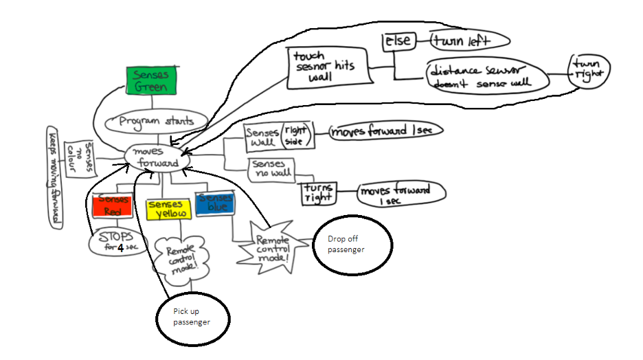

Project SPYN


Project Goal
Program and design a robot car to navigate a maz whilie picking up and dropping off a passenger using MATLAB.
Project Background
We utilized MATLAB to navigate a car through a maze. The robot must respond to external stimuli: If the robot senses green, it must initialize it’s process; red, indicates it must stop for 4 seconds; yellow indicates passenger pick up; and blue indicates drop-off zone. The robot utilizes gyro, touch, color, and distance sensors to avoid walls and detect the colors.